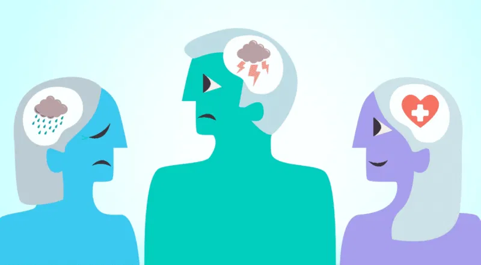

El equipo de Alerta Mental está conformado por estudiantes de Ingeniería en Computación comprometidos con el bienestar emocional de la comunidad universitaria. Nuestro objetivo es brindar una herramienta sencilla y confiable para detectar señales de estrés, ansiedad y otros problemas que afectan la salud mental.
Crear conciencia sobre la importancia de la salud mental y facilitar recursos de apoyo para estudiantes que se encuentren en situaciones de vulnerabilidad emocional.
